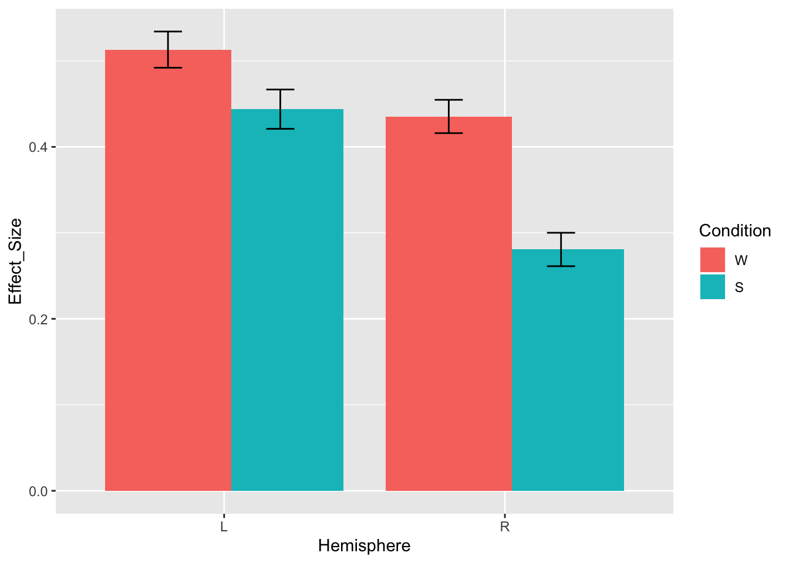

4 The devil’s in the details
Now you know the basics of how to build a mixed effect model. But in some ways, your learning has just begun. Now you will face a million choices that you will have to make for each model you make. We discuss some of them in this chapter.
4.1 Testing significance
How do I know which terms in my model are significantly different from 0? We’ve already used some methods for estimating significance in the last chapter, but let’s be explicit here.
4.1.1 Method 1: Read the p-values directly from model summary
Remember a term we had before, ConditionS? It is the estimate of the average Effect_Size for the Sentences > Words contrast. How do we know whether this effect is significant?
lmerTest allows us to just get a p value associated with each (thanks to this package, we get an extra column in your output for every fixed effect we estimate)
m1 = lmer(Effect_Size ~ 1 + Condition + (1 |SubjectID) + (1 |Experiment) + (1 |Region),
data = data.md.red, REML=FALSE)
summary(m1)## Linear mixed model fit by maximum likelihood . t-tests use
## Satterthwaite's method [lmerModLmerTest]
## Formula:
## Effect_Size ~ 1 + Condition + (1 | SubjectID) + (1 | Experiment) +
## (1 | Region)
## Data: data.md.red
##
## AIC BIC logLik deviance df.resid
## 6927.0 6965.8 -3457.5 6915.0 4714
##
## Scaled residuals:
## Min 1Q Median 3Q Max
## -5.2856 -0.5988 -0.0620 0.5180 5.9735
##
## Random effects:
## Groups Name Variance Std.Dev.
## SubjectID (Intercept) 0.19795 0.4449
## Region (Intercept) 0.04740 0.2177
## Experiment (Intercept) 0.02862 0.1692
## Residual 0.22806 0.4776
## Number of obs: 4720, groups: SubjectID, 115; Region, 20; Experiment, 6
##
## Fixed effects:
## Estimate Std. Error df t value Pr(>|t|)
## (Intercept) 0.45666 0.09492 12.84781 4.811 0.000351 ***
## ConditionS -0.11198 0.01390 4584.90113 -8.055 1.01e-15 ***
## ---
## Signif. codes: 0 '***' 0.001 '**' 0.01 '*' 0.05 '.' 0.1 ' ' 1
##
## Correlation of Fixed Effects:
## (Intr)
## ConditionS -0.073Look at Fixed effects -> ConditionS -> value in the Pr(>|t|) column is the p value of the “S” contrast, which in our case is Sentence>Word.
Here’s how you can report this effect:
The responses in the multiple demand (MD) network during sentence reading were lower than responses during word reading (beta=-0.11, SE=0.01, p<.001).
Note that lmerTest only estimates p values for fixed effects, so if you want to estimate the significance of a random effect, you have to use Method 2.
4.1.2 Method 2: Model comparison
We’ve done this a lot in the previous chapter, but just to summarize:
- Create a “null” model where the predictor of interest is missing
m1.null = lmer(Effect_Size ~ 1 + Condition + (1 |SubjectID) + (1 |Experiment),
data = data.md.red, REML=FALSE)- Use the likelihood ratio test (the
anova()command) to find out if the model with more parameters fits the data better.
## Data: data.md.red
## Models:
## m1.null: Effect_Size ~ 1 + Condition + (1 | SubjectID) + (1 | Experiment)
## m1: Effect_Size ~ 1 + Condition + (1 | SubjectID) + (1 | Experiment) +
## m1: (1 | Region)
## Df AIC BIC logLik deviance Chisq Chi Df Pr(>Chisq)
## m1.null 5 7709.9 7742.2 -3850.0 7699.9
## m1 6 6927.0 6965.8 -3457.5 6915.0 784.88 1 < 2.2e-16 ***
## ---
## Signif. codes: 0 '***' 0.001 '**' 0.01 '*' 0.05 '.' 0.1 ' ' 1This tells you that Region matters but it doesn’t tell you anything about which Region has higher or lower responses compared to the rest.
Here’s how you can describe this result:
The overall response magnitude varied substantially by region (\(\sigma\)=0.28). The likelihood ratio test showed that adding the region intercept term significantly improved model fit (\(X^2\)=784.9, p<.001).
4.1.3 Method 3: pairwise tests
If you just want the mean estimates for each condition and you want to compare them to 0, you can use ls_means() from lmerTest
## Least Squares Means table:
##
## Estimate Std. Error df t value lower upper Pr(>|t|)
## ConditionW 0.456662 0.094922 12.8 4.8109 0.251350 0.661975 0.0003515
## ConditionS 0.344686 0.094922 12.8 3.6313 0.139373 0.549999 0.0030993
##
## ConditionW ***
## ConditionS **
## ---
## Signif. codes: 0 '***' 0.001 '**' 0.01 '*' 0.05 '.' 0.1 ' ' 1
##
## Confidence level: 95%
## Degrees of freedom method: SatterthwaiteReporting:
The MD network’s response to word reading was significantly above 0 (beta=0.41, SE=0.06, p<.001), and so was the response to sentence reading (beta=0.27, SE = 0.09, p=.006).
You can also use the same function to run a bunch of pairwise comparisons. In the current model, it was reasonably easy to read the effects right off the coefficients but when there are more than 2 levels per predictor this can get trickier so tools like this can be handy.
## Least Squares Means table:
##
## Estimate Std. Error df t value lower
## ConditionW - ConditionS 0.111976 0.013902 4584.9 8.0546 0.084721
## upper Pr(>|t|)
## ConditionW - ConditionS 0.139231 1.008e-15 ***
## ---
## Signif. codes: 0 '***' 0.001 '**' 0.01 '*' 0.05 '.' 0.1 ' ' 1
##
## Confidence level: 95%
## Degrees of freedom method: SatterthwaiteTHINK: how many rows would we get if we had three conditions (say, Word, Sentence and Paragraph)? Four? Five? Would we get all these estimates after running the lmer model?
When models get more complicated you may need to switch to using emmeans, which is another package with lots of great ways to probe models.
NOTE: when running follow-up analyses, don’t forget to account for multiple comparisons. Emmeans provides ways to do this automatically (by specifying the right parameters), but for lmerTest’s ls_means you’ll have to do it manually.
If you have multiple correlated predictors, things get harder. The main thing that can happen is that the estimates become unstable. In that case, it’s safer to do model comparison (method 2). You can almost always find out if an effect explains useful variance or not, but you can’t always tell what the direction or magnitude of the effect is.
4.2 Contrasts
4.2.1 Intro to contrast coding
Let’s take another look at the fixed effects in our model.
m1 = lmer(Effect_Size ~ 1 + Condition + (1 |SubjectID) + (1 |Experiment) + (1 |Region),
data = data.md.red, REML=FALSE)
coef(summary(m1)) ## Estimate Std. Error df t value Pr(>|t|)
## (Intercept) 0.4566623 0.09492157 12.84781 4.810944 3.514693e-04
## ConditionS -0.1119761 0.01390210 4584.90113 -8.054616 1.007830e-15As we’ve mentioned before, the first level (W) becomes the intercept, and all other levels are contrasted against it. But why is that?
Well let’s see how R is treating these levels. Ultimately, in order to fit the model, R has to somehow convert them into numbers. Using the contrasts() function, you can see what those numbers are.
## S
## W 0
## S 1This is called dummy coding - but there’s nothing dumb about it! It’s just the default in R. Another term for it is “treatment coding”
But what if we don’t want to treat the word reading condition in this privileged way? Turns out, you can set the contrasts manually:
data.md.red.sum = data.frame(data.md.red) # make a copy of the data
contrasts(data.md.red.sum$Condition) = c(-0.5, 0.5) # change the contrast
colnames(attr(data.md.red.sum$Condition, "contrasts")) = "S>W" # name the contrast (optional)
contrasts(data.md.red.sum$Condition) ## S>W
## W -0.5
## S 0.5Ok, looks confusing. What did we just do?
The difference between S and W remains 1. What has changed is where we place 0 (aka, the intercept). In dummy coding, 0 was aligned with the W condition. Now, it is in between W and S. Thus, our intercept will now reflect the average response across both W and S conditions.
This way of setting up contrasts is called sum coding (or deviation coding).
m1.sum = lmer(Effect_Size ~ 1 + Condition + (1 |SubjectID) + (1 |Experiment) + (1 |Region),
data = data.md.red.sum, REML=FALSE)
coef(summary(m1.sum)) ## Estimate Std. Error df t value Pr(>|t|)
## (Intercept) 0.4006743 0.09466671 12.71039 4.232473 1.027008e-03
## ConditionS>W -0.1119761 0.01390210 4584.90113 -8.054616 1.007830e-15ConditionS>W is still the difference between the 2 conditions.
Does it really matter where we place the intercept?
It matters whenever you want to report the intercept value.
It matters even more when we want to interpret interactions.
4.2.2 Applications to interactions
At the end of last chapter, we introduced a model with an interaction between 2 fixed effects - Condition and Hemisphere. Let’s take a closer look at what exactly it tells us about our data.
We’ll start with a quick plot to see what results we should be expecting
ggplot(data.md.red)+
stat_summary(aes(x=Hemisphere, y=Effect_Size, fill=Condition),
geom="col", fun.y="mean", position=position_dodge(0.8))+
stat_summary(aes(x=Hemisphere, y=Effect_Size, group=Condition),
geom='errorbar', fun.data='mean_se', position=position_dodge(0.8), width=0.2)
Based on this plot, we would expect to see the main effect of condition (W>S), maybe the main effect of hemisphere (L>R), and likely an interaction between hemisphere and condition (the W>S effect is larger in RH). Was that what we observed?
m2 = lmer(Effect_Size ~ Condition*Hemisphere + (1 + Condition | SubjectID) + (1 | Experiment) + (1 | Region), data = data.md.red, REML=FALSE);
coef(summary(m2)) # fixed## Estimate Std. Error df t value
## (Intercept) 0.49408827 0.10613083 18.29735 4.6554643
## ConditionS -0.06607851 0.03537294 153.88236 -1.8680525
## HemisphereR -0.07773581 0.09537081 20.18837 -0.8150901
## ConditionS:HemisphereR -0.08544343 0.02608228 4469.92124 -3.2759190
## Pr(>|t|)
## (Intercept) 0.0001890031
## ConditionS 0.0636561836
## HemisphereR 0.4245326473
## ConditionS:HemisphereR 0.0010612211The interaction between condition and hemisphere is indeed significant (beta=-0.08, SE=0.03, p=.001), but the effect of condition is not (beta=-0.07, SE=0.04, p=.064), and neither is the effect of hemisphere (beta=-0.08, SE=0.10, p=.424). Why is that?
Our intuition doesn’t align with the model output because the hemisphere and condition effects here do not actually reflect the main effect of each factor. The reason why is because each fixed effect is evaluated with respect to the intercept of the other one.
Remember, this is the dataset where we’re using the default dummy coding, so the intercept for condition is words and the intercept for hemisphere is left. As a result,
under ConditionW we have the simple effect of Condition: Words>Sentences but only for the left hemisphere. And it’s indeed pretty small.
under HemisphereR we have the simple effect of Hemisphere: Right>Left but only for words. Looking at the plot, we can verify that the hemisphere difference for words is indeed ~0.08 (as predicted by our beta value).
In order to estimate the main effects, we want to use sum coding. Then, the intercept will reflect the average response for each factor across levels.
We’ve already done this for condition:
## S>W
## W -0.5
## S 0.5Let’s do it for hemisphere too:
contrasts(data.md.red.sum$Hemisphere) = c(-0.5, 0.5)
colnames(attr(data.md.red.sum$Hemisphere, "contrasts")) = "R>L"
contrasts(data.md.red.sum$Hemisphere)## R>L
## L -0.5
## R 0.5Now the effect of hemisphere will be estimated with respect to the average response for words and sentences, and the effect of condition will be estimated with respect to the average response across hemispheres.
m2.sum = lmer(Effect_Size ~ Condition*Hemisphere + (1 + Condition | SubjectID) + (1 | Experiment) + (1 | Region), data = data.md.red.sum, REML=FALSE);
coef(summary(m2.sum)) ## Estimate Std. Error df t value
## (Intercept) 0.40082257 0.09337878 12.41336 4.292438
## ConditionS>W -0.10880025 0.03288109 114.96989 -3.308900
## HemisphereR>L -0.12045752 0.09446968 19.44370 -1.275092
## ConditionS>W:HemisphereR>L -0.08544343 0.02608229 4469.91856 -3.275917
## Pr(>|t|)
## (Intercept) 0.0009697075
## ConditionS>W 0.0012510800
## HemisphereR>L 0.2173028893
## ConditionS>W:HemisphereR>L 0.0010612282Notice that the interaction remained the same but the simple effects changed. The effect of condition is now significant (beta=-0.11, SE=0.03, p=.001); the effect of hemisphere is not significant (beta=-0.12, SE=0.09, p=.217), but its estimate is larger and actually reflects the mean difference between L and R hemispheres.
THINK: What does the intercept term reflect in m2 and in m2.sum?
Of course, we don’t always want to transform everything to sum coding. It might be totally reasonable to estimate the effect of hemisphere for words rather than for the word/sentence average. You just want to be clear about how you’re coding your contrasts because it will have a big impact on how to interpret the results.
4.3 Convergence issues
Remember we got a warning in section 3.5 saying that our model doesn’t converge? We’ll repeat that example here:
## Warning in checkConv(attr(opt, "derivs"), opt$par, ctrl =
## control$checkConv, : Model failed to converge with max|grad| = 0.0352573
## (tol = 0.002, component 1)## Estimate Std. Error df t value Pr(>|t|)
## ConditionW 0.4547675 0.08210915 9.847007 5.538573 0.0002621747
## ConditionS 0.3378952 0.10445966 13.926610 3.234696 0.0060276813## Groups Name Std.Dev. Corr
## SubjectID (Intercept) 0.479932
## ConditionS 0.318837 -0.364
## Region (Intercept) 0.184415
## ConditionS 0.080952 0.795
## Experiment (Intercept) 0.132303
## ConditionS 0.059135 0.818
## Residual 0.446580Let’s take a look at the strategies we can use to resolve this issue.
4.3.1 Solution 1: try other optimizers
We can use a different optimizer and/or explicitly specify the stopping criterion.
m.ris.bobyqa = lmer(Effect_Size ~ 0 + Condition + (1 + Condition | SubjectID) + (1 + Condition| Experiment) + (1 + Condition | Region), data = data.md.red, REML=FALSE,
control = lmerControl(optimizer = "bobyqa", optCtrl=list(maxfun=2e5)))
coef(summary(m.ris.bobyqa)) # fixed## Estimate Std. Error df t value Pr(>|t|)
## ConditionW 0.4544214 0.08190374 8.989032 5.548237 0.0003587971
## ConditionS 0.3378332 0.10455535 13.765356 3.231143 0.0061498913## Groups Name Std.Dev. Corr
## SubjectID (Intercept) 0.480476
## ConditionS 0.319156 -0.366
## Region (Intercept) 0.184321
## ConditionS 0.080824 0.795
## Experiment (Intercept) 0.131508
## ConditionS 0.058361 0.863
## Residual 0.446573It worked! No more convergence issues.
What if bobyqa didn’t converge? Instead of just specifying a single optimizer, you can use the function allFit which will run all the optimizers for you, and hopefully at least some of them fit. See lme4 documentation for more details.
allFit can also be used to determine whether you can trust your estimates. For this, you can fit the model with multiple optimizers, look at the fixed effects and determine whether the estimates across all optimizers are the same (out to ~4 sig digits). If they are, then it’s probably fine to use the model estimates.
4.3.2 Solution 2: brms
https://paul-buerkner.github.io/brms/
This is a package for Bayesian modeling; it is based on the probabilistic programming language called Stan. The syntax for specifying the model is very similar to lme4, but switching from a frequentist to a Bayesian approach to modeling might require some extra work. These models might also take a while to run.
4.3.3 Solution 3: REML
In all the examples above, we fit our model using maximum likelihood. The default for lmer is actually restricted maximum likelihood (REML). Because it fits the data in stages, in some cases it might make it easier for the model to converge.
m.ris.reml = lmer(Effect_Size ~ 0 + Condition + (1 + Condition | SubjectID) + (1 + Condition| Experiment) + (1 + Condition | Region), data = data.md.red, REML=TRUE)
summary(m.ris.reml)## Linear mixed model fit by REML. t-tests use Satterthwaite's method [
## lmerModLmerTest]
## Formula: Effect_Size ~ 0 + Condition + (1 + Condition | SubjectID) + (1 +
## Condition | Experiment) + (1 + Condition | Region)
## Data: data.md.red
##
## REML criterion at convergence: 6527
##
## Scaled residuals:
## Min 1Q Median 3Q Max
## -5.6493 -0.5807 -0.0683 0.5089 5.9141
##
## Random effects:
## Groups Name Variance Std.Dev. Corr
## SubjectID (Intercept) 0.229264 0.47882
## ConditionS 0.101223 0.31816 -0.36
## Region (Intercept) 0.034497 0.18573
## ConditionS 0.006672 0.08168 0.79
## Experiment (Intercept) 0.023741 0.15408
## ConditionS 0.005286 0.07270 0.47
## Residual 0.199429 0.44657
## Number of obs: 4720, groups: SubjectID, 115; Region, 20; Experiment, 6
##
## Fixed effects:
## Estimate Std. Error df t value Pr(>|t|)
## ConditionW 0.45783 0.08837 8.54662 5.181 0.000683 ***
## ConditionS 0.33841 0.10926 11.06806 3.097 0.010086 *
## ---
## Signif. codes: 0 '***' 0.001 '**' 0.01 '*' 0.05 '.' 0.1 ' ' 1
##
## Correlation of Fixed Effects:
## CndtnW
## ConditionS 0.904This method worked too. Note, however, that if you then try to use the anova() function on the model, it will automatically refit using maximum likelihood - which brings us back to square one.
4.3.4 Solution 4: simplify your model
The convergence issues can arise if your model is too complicated and/or if there isn’t enough data to estimate all the parameters.
THINK: how many parameters does m.ris need to estimate? (Hint: don’t forget about the correlations between random effects)
There is no one answer to how many samples are sufficient, but if it’s 2 per parameter, it’s too low (e.g. we’re estimating the participant by condition slope, and we only have estimates for 2 ROIs, it’s hard to decide how much variance should go into ROI terms and how much should be assigned to the participant x condition slope). Note that it’s not about the number of datapoints but rather the number of groupings.
In some cases, you will get a singular fit warning. We can also check for it explicitly:
## [1] FALSEA singular model means that one of the random effects (or a combination of random effects) is zero. While mathematically such a model is well-defined, in practice this model often means that the model overfits: there is not enough power to distinguish
All in all, if you suspect that your model is at risk of overfitting the data, you should consider simplifying your model.
A general recommendation is to first remove random effects which account for least variance.
## Groups Name Std.Dev. Corr
## SubjectID (Intercept) 0.479932
## ConditionS 0.318837 -0.364
## Region (Intercept) 0.184415
## ConditionS 0.080952 0.795
## Experiment (Intercept) 0.132303
## ConditionS 0.059135 0.818
## Residual 0.446580(Admittedly, this step is a bit weird since the reason we’re simplifying the model is because we don’t trust these estimates to begin with. You can also try estimating these random effects individually in simpler models & then comparing the magnitudes.)
Our lowest random effect is the Condition x Experiment slope, so let’s try removing that:
## Warning in checkConv(attr(opt, "derivs"), opt$par, ctrl =
## control$checkConv, : Model failed to converge with max|grad| = 0.00201745
## (tol = 0.002, component 1)Okay that didn’t do it… Let’s try one more - the variance estimate for the Condition x Region slope is also pretty low.
m.ris.red = lmer(Effect_Size ~ 0 + Condition + (1 + Condition | SubjectID) + (1 | Experiment) + (1 | Region), data = data.md.red, REML=FALSE)
coef(summary(m.ris.red)) # fixed## Estimate Std. Error df t value Pr(>|t|)
## ConditionW 0.4552242 0.09588469 13.57936 4.747622 0.0003385931
## ConditionS 0.3464231 0.09585435 13.57702 3.614057 0.0029489722## Groups Name Std.Dev. Corr
## SubjectID (Intercept) 0.47456
## ConditionS 0.32323 -0.343
## Region (Intercept) 0.21798
## Experiment (Intercept) 0.16834
## Residual 0.44852Alright, now our model finally converges.
In short, here is what you should do when encountering convergence issues:
Make sure your model structure is justified (more on that in the next chapter).
Try to make the model converge by tinkering with the optimization procedure.
4.4 Summary
You can estimate the significance of fixed effects using the lmerTest package; besides the p value, we also recommend reporting the effect size and the standard error of the estimate.
You can estimate the significance of a random effect by performing the likelihood ratio test; note, however, that this test does not allow you to estimate the direction or the magnitude of the effect.
Be mindful of the contrasts you’re setting for your categorical variables (explicitly or implicitly).
When running into convergence issues, make sure your model structure makes sense given your dataset and then try one of the technical solutions, e.g. a different optimizer.